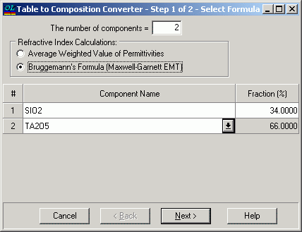
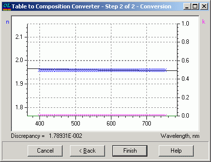

Composition from Table
Composition from Table
Navigation: OptiLayer Menu Commands > Data Menu > Substrate and Layer Material >
Composition from Table
` <formula_from_table.html>`__ ` <idh_edit_layer_material.html>`__ ` <table_simplify.html>`__

In the first step of this dialogue, choose the quantity of materials that comprise the composite material, as well as their respective names. Additionally, define initial values for the fractions of these materials. These initial values will serve as the baseline for a fitting process aimed at finding the most accurate approximation of the tabular data.

In the second step of the conversion dialogue, the most accurate approximation of the tabular data is shown. If the conversion result seems satisfactory, click the “Finish” button to transfer the calculated composition approximation to the Materials/Substrate editor.
Should the quality of the achieved approximation not meet your expectations, you have the option to click the “Back” button. This action allows you to experiment with a different set of materials or adjust the initial fractions of materials in an effort to enhance the quality of the approximation.